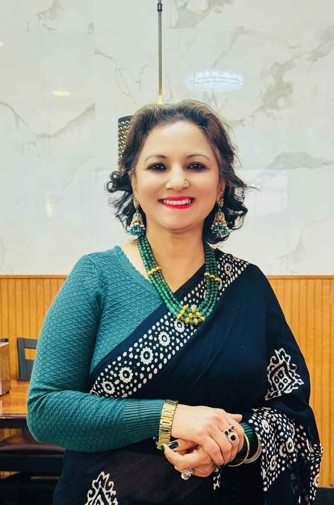

Samaj Press
The Future of Cross-Border Journalism
An editorial examining how global journalism networks are reshaping narratives and creating pathways for marginalized voices.

"Journalism is the art of telling stories that matter. After two decades, my mission remains unchanged: give voice to the voiceless and illuminate the connections between our worlds."
An editorial examining how global journalism networks are reshaping narratives and creating pathways for marginalized voices.
Investigative series profiling 15 female journalists reshaping global media narratives. Award-nominated work spanning 2023-2024.
Comprehensive investigation into press freedom challenges with interviews from 20+ countries. Global recognition.
Opinion series on protecting journalistic integrity amid disinformation and polarization in media landscapes.
Peer-reviewed academic article on transnational journalism practices and community building through media.
Reflective essay on navigating cultural sensitivity, accuracy, and truth in international journalism reporting.
I am Jharana Adhikari — a globally recognized journalist and editorial strategist committed to amplifying authentic voices across borders. My career is built on a simple principle: the most powerful stories are those that connect us, transcend boundaries, and illuminate the human experience.
After 13 transformative years as Associate Editor at Nari Magazine (Kantipur Media Group), I now lead editorial excellence at Samaj Press, overseeing international journalism initiatives. My work spans investigative journalism, cultural narratives, gender-focused reporting, and cross-cultural bridge-building.
I believe in journalism as a bridge—one that connects peoples, cultures, and communities with authenticity, respect, and a commitment to truth. Every story deserves to be told. Every voice matters.
Samaj Press
Leading editorial vision with global perspective. Oversee cross-cultural journalism, editorial standards, and strategic press initiatives worldwide.
Nepal America Journalist Association
Steward of organizational resources. Advocate for journalists bridging Nepal and the Americas. Promote press freedom and professional development.
Austin Chamber of Commerce
Community leader and business advocate. Bridge media, business, and cultural communities. Promote Austin's growth and international dialogue.
I'm passionate about meaningful conversations — whether about journalism, media strategy, cultural narratives, or community building. Interested in collaborating, speaking engagements, or just connecting?
Reach out today. I'd love to hear from you.
Location
Austin, Texas
Reach
Global Journalist
Role
Global Editor & Author